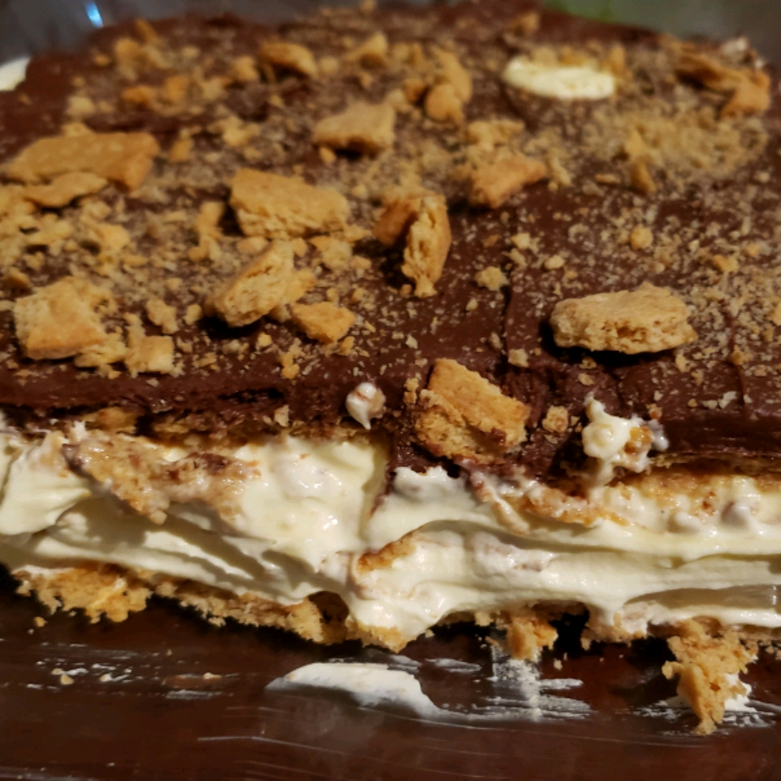

Chocolate Eclair Dessert

Description
This is a no-bake pudding dessert that's so quick and easy to make--everyone loves it. I always keep the ingredients on hand in case I need a quick dessert. It's best if it sits overnight before serving.
Ingredients
- 2 individual packages graham crackers
- 2 (3 ounce) packages instant vanilla pudding mix
- 3 cups milk
- 1 (8 ounce) container frozen whipped topping, thawed
- 1 (16 ounce) package prepared chocolate frosting
Directions
- Line the bottom of a 9x13-inch pan with graham crackers.
- In a large bowl, combine pudding mix and milk; stir well. Mix whipped topping into pudding mixture. Spread half of mixture over graham cracker layer. Top with another layer of graham crackers and the remaining pudding.
- Top all with a final layer of graham crackers and frost with chocolate frosting. Refrigerate at least two hours before serving to allow the graham crackers to soften.
Return to Homepage